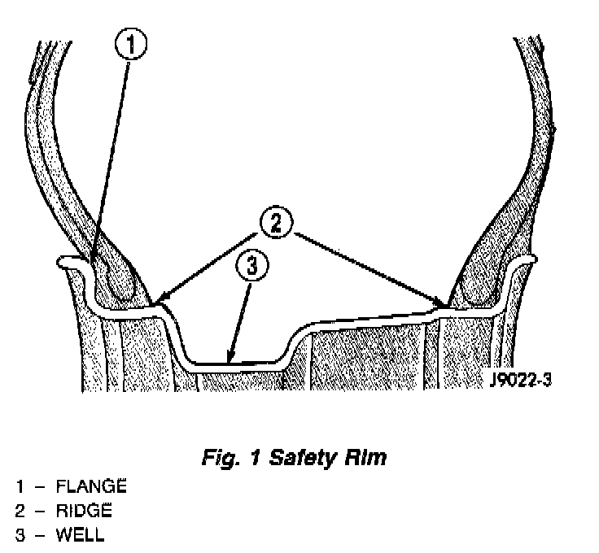

Wheels: Description and Operation
Fig. 1:

Available rim sizes are on the safety certification label located on the drivers door shut face. Rim size is determined by the drivetrain package.
Original equipment wheels are designed for operation up to the specified maximum vehicle capacity.
All models use steel or cast aluminum wheels. Every wheel has raised sections between the rim flanges and rim drop well called safety humps.
Initial inflation of the tire forces the bead over these raised sections. In case of rapid loss of air pressure, the raised sections help hold the tire on the wheel.
Cast aluminum wheels require coated balance weights and special alignment equipment.
The wheel studs and nuts are designed for specific applications and must be replaced with equivalent parts. Do not use replacement parts of lesser quality or a substitute design. All aluminum and some steel wheels have wheel stud nuts with an enlarged nose. This enlarged nose is necessary to ensure proper retention of the wheels.
Before installing the wheel, remove any build up of corrosion on the wheel mounting surfaces.
CAUTION: Installing wheels without good metal-to-metal contact could cause loosening of wheel nuts. This could adversely affect the safety and handling of your vehicle.